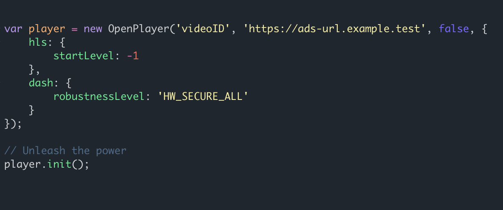

Why another media player? And why OpenPlayerJS?
Technologies are evolving at a fast pace. Having a player that plays the most popular content in all browsers and devices, keeps itself ever-green, and can be customized easily is a no-brainer for everyone that wants the best.

Easily configured
Either setting up the player through the video/audio tags or via Javascript, you just need a pair of class names and a small set of configuration options... and you are all set!
Cross Browser/Cross Device Support
With IE11+ support, OpenPlayerJS is your best choice! Also, giving the constant changes of policies on different browsers, OpenPlayer integrates a smart algorithm to detect autoplay capabilities so you don't have to worry about each browser's quirks or workarounds for that.
Media Advertising support
OpenPlayerJS integrates Google IMA SDK so users have full support for all the types of specifications for Ads in the current market: VAST/VPAID/VMAP. Just provide a valid Ads URL and let OpenPlayerJS to take care of the rest!